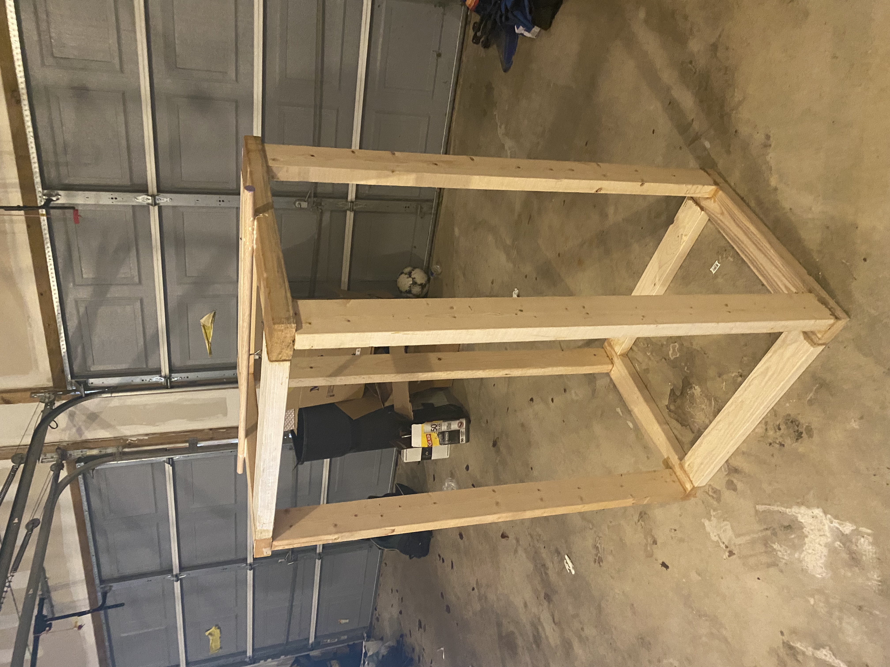

Step 1 |
Construct a wooden rectangular prism with wooden planks. Next, an eyelet screw will be screwed into the center of the dowel such that there is an equal length of dowel on both sides of the eyelet. The top of a quick release handle will be locked into the eye of the eyelet screw. The dowel will be placed in the center of the top of two Group A planks on the upper rectangle. The dowel will be positioned such that there is 5.08 centimeters of the dowel hanging off each side of the apparatus. In addition, the dowel will be rotated such that the eyelet screw will be facing down. Finally, a screw will be fastened into each of the two junctions of the Group A planks and the dowel, such that each screw passes through the top of each end of the dowel and into the center of the top long side of each Group A plank in the upper rectangle.
|
 |
Step 2 |
The vinyl sheet flooring and linoleum flooring will be cut by store employees at Home Depot in Freehold, New Jersey. The luxury vinyl tile flooring will be cut down to 30.48 centimeters long by 30.48 centimeters wide using the Heavy Duty Wood Guillotine Trimmer.
|
|
Step 3 |
The Vernier Force Plate will be placed on the ground, directly under the cannonball weight, which will be in the center of the apparatus. A flooring material will be placed on top of the force plate |
|
Step 4 |
Once the cannonball weight has stabilized and is completely still, the release pin on the quick release handle will be pulled, dropping the cannonball weight directly in the center of the flooring material. The cannonball weight will be reset to its original location, and the quick release handle will be locked. The above process will then be repeated for a total of 50 trials on the sheet vinyl flooring. After each trial, the force-time graph generated by the Vernier Graphical Analysis Application was recorded and saved. |
|
Step 5 |
The Fmax of each trial for each testing group was recorded, and ANOVA testing was used to check for significant differences between the Fmax forces generated by collisions with each flooring material. In addition, ten t tests were used to test for significant differences of the Fmax between each material compared to one another, which included t tests comparing the baseline to each flooring material. The mean of the Fmax forces for each testing group was recorded, and the percent of impact attenuation relative to the baseline was calculated by subtracting the mean Fmax of a flooring material from the mean Fmax of the baseline group and then dividing the difference by the mean Fmax of the baseline group. |
|
Step 6 |
The anthropomorphic head will be 3D printed in two pieces at High Technology High School using PLA at a 10% infill. Two jars of Smooth-On Ecoflex will be mixed for four minutes, and then the Ecoflex will be applied to both sides of each of the 3D printed pieces (Alhaddad, 2019). Both parts of the head will then be left to cure for four hours in a room at room temperature (Alhaddad, 2019). One pound of modelling clay will be added to the inside of each of the 3D printed parts, and an indent in the clay will be left for the tri-axial accelerometer. The tri-axial accelerometer will be placed in the center of the front part of the head, and both parts of the dummy head will be fastened together using wood glue. |
|
Step 7 |
Head Injury Criterion was modified in order to be compatible with the results of the anthropomorphic head testing |
|